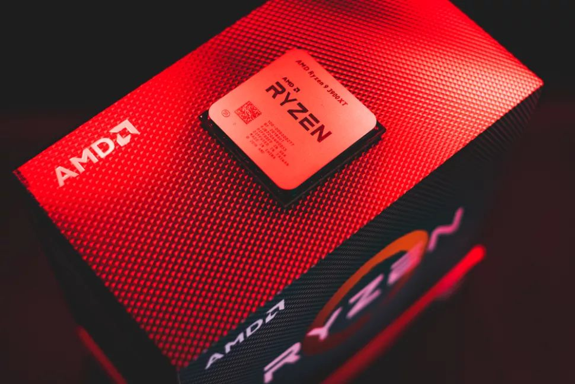
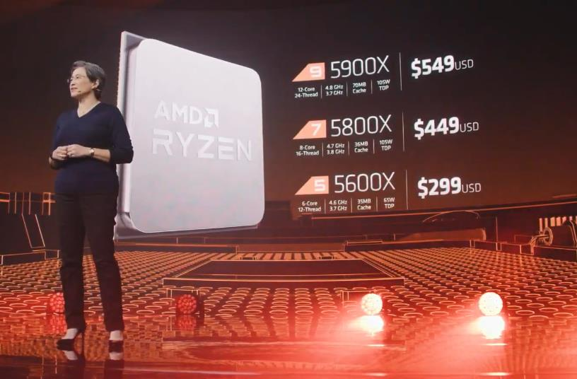
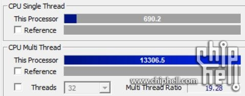
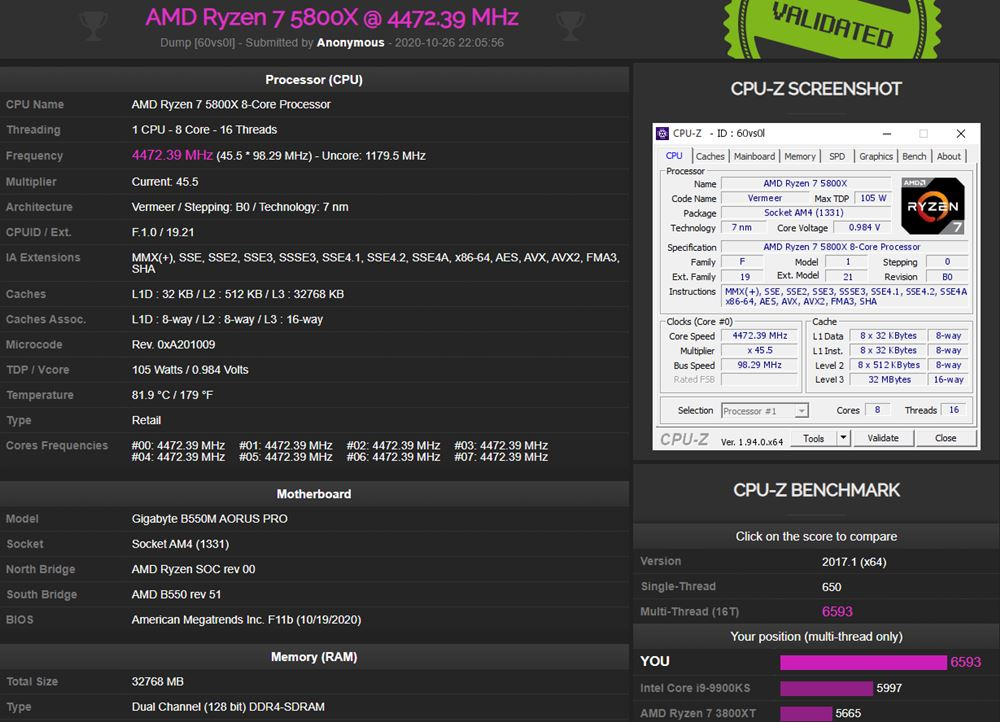

AMD presenta sus nuevos controladores de chipsets para Ryzen

AMD ha lanzado su último controlador de chipset (2.10.13.408) para mejorar el ajuste de rendimiento de los sistemas Ryzen con los sockets principales AM4 y HEDT TRX40. La compañía también ha introducido algunas correcciones
de errores en el camino.
El plan de potencia de Ryzen, que dicta cómo funciona el procesador en consonancia con varias condiciones del sistema operativo, obtiene una actualización de 6.0.0.3 a 6.0.0.7. El registro de cambios menciona “se ha añadido un nuevo programa
de soporte” (“new program support added”) pero no estipula el soporte exacto que se ha añadido.

La actualización del chipset también incluye una etiqueta de “nuevo soporte de programa añadido” para el controlador de MicroPEP. El controlador de MicroPEP ayuda al chip a manejar las transiciones entre los diferentes estados de energía y
frecuencias.
AMD también actualizó el controlador I2C, y el registro de cambios indica “ajuste de la frecuencia del reloj” (“clock frequency tuning”), por lo que parece que AMD está ajustando sus subsistemas de administración de potencia/frecuencia.
AMD también hizo algunos otros cambios, incluyendo correcciones de errores en el controlador PCI y SFH, además de arreglar algunos problemas con el instalador del chipset.
Como siempre, se debe intentar tener controlador del chipset más actual para extraer la mejor combinación de potencia y rendimiento de un sistema Ryzen. Si tienes un sistema equipado con Ryzen, puedes descargar el nuevo controlador del chipset desde la
página de soporte de AMD
AMD Ryzen 7 5800X y Ryzen 9 5950X, ¡por encima del i9-10900K en CPU-Z!
Zen 3 viene pisando fuerte, y esto no ha hecho más que empezar. Se ha filtrado un benchmark de CPU-Z realizado por el Ryzen 9 5950X y el Ryzen 7 5800X que deja claro cuál es el poderío de estos procesadores.
Complicado panorama para Intel, ya que los usuarios van a seguir teniendo dudas sobre qué CPU comprar. Se han filtrado varios benchmarks que demuestran la capacidad de estos chips, pero este test de CPU-Z es otro mazazo para Intel. El i9-10900K no sale
muy bien parado contra ninguno de los 2.

Se ha criticado mucho los precios de AMD, pero vamos a ser cautos y esperar a probarlos porque parece que tienen muy buena pinta. Toda la noticia surge en el foro de Chiphell tras ver como un usuario ha compartido benchmarks de los Ryzen 7 5800X y Ryzen
9 5950X en CPU-Z.
Empezando por el Ryzen 9 5950X, es un procesador de 16 núcleos y 32 hilos que funciona a una frecuencia base de 3.4 GHz, pudiendo llegar a unos teóricos 4.9 GHz. Pues bien, ha conseguido 690.2 puntos en el test mono-hilo y 13.306,5 en el test multi hilo.
Por otro lado, tenemos al Ryzen 7 5800X, un chip con 8 núcleos y 16 hilos que funciona a una frecuencia base de 3.8 GHz, teniendo una turbo de 4.7 GHz. En su caso, ha obtenido 650 puntos en mono-hilo y 6593 en multi hilo.

¿Y qué puntuación tiene el i9-10900K? Éste es una CPU de 10 núcleos y 20 hilos con una frecuencia base de 3.7 GHz y unos teóricos 5.3 GHz en boost. En CPU-Z, consigue una puntuación de 584 puntos en mono-hilo y 7.389 en multi-hilo. Nos sorprende que,
al menos en mono-hilo, se quede por debajo de los otros Ryzen.